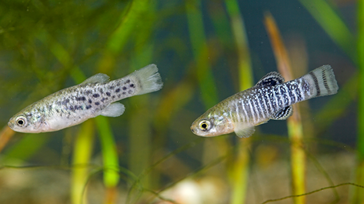
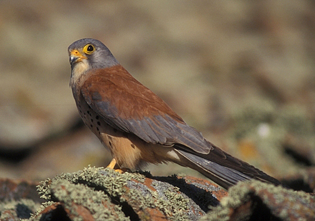

Las 3 especies mas amenazadas

Población desconocida
Aphanius iberus (fartet en castellano y valenciano; en este último también fartonet —diminutivo a veces usado en la Comunidad Valenciana— o peixet de sequiol) es una especie de pez ciprinodontiforme de la familia Cyprinodontidae. Es una de las especies de vertebrados ibéricos en mayor peligro de extinción.

5.000
El cernícalo primilla (Falco naumanni) es una especie de ave falconiforme de la familia Falconidae que se extendía por casi la totalidad de la península ibérica, sur de Francia, sur de Italia, los Balcanes y desde el mar Caspio y Anatolia por gran parte de Asia, también se encuentra en el norte de África desde Marruecos hasta Egipto. No se conocen subespecies.

Entre 860 y 1100
Es un ave rapaz diurna de unos 70 cm de longitud, con un peso de entre 1,6 y 2,2 kg . De aspecto grande y fuerte, los adultos presentan dorso marrón claro y partes inferiores más claras, blanco-amarillentas con trazos oscuros.